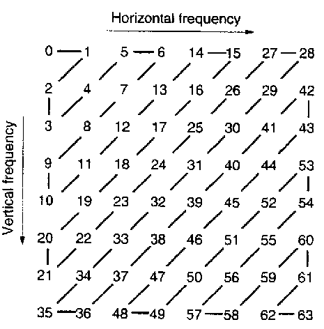
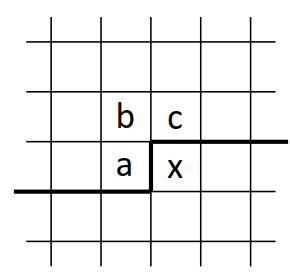

Jeśli strona była dla Ciebie pomocna, możesz wesprzeć mnie w jej utrzymaniu na buycoffee.to/mgarbowski
Kompresja obrazów
System kodowania obrazów
- Kodek = koder + dekoder
- Efektywność kompresji wynika z algorytmu
- Złożoność obliczeniowa rośnie wraz z efektywnością kompresji
- Najczęściej stosuje się kompresję stratną
- o akceptowalnej utracie jakości
- pozwala na silniejszą kompresję (redukcję średniej bitowej)
- Liczba ramek na sekundę i rozdzielczość wpływają na czas kompresji
- Kodowanie obejmuje też kody korekcyjne/kanałowe i szyfrowanie
- Kody korekcyjne dodają dane kontrolne pozwalające wykrywać i poprawiać błędy transmisji
Kodowanie kanałowe
- Ma na celu ukształtowanie charakterystyki widmowej sygnału cyfrowego
- tak by był najdogodniejszy do transmisji
- umożliwiał jak największą gęstość zapisu
- odporność na szum i zakłócenia
- detekcja i korekcja błędów
- dla zadanego kanału komunikacyjnego
Model kodowania
- Model
- Model obrazu
- Koder entropijny (np huffmana)
- Kanał
- Dekoder entropijny
- Wyjściowy model obrazu
- Przestawienie sygnału w postaci efektywnie kodowanej przez koder entropijny
- Dekorelacja danych
- wykorzystanie redundancji danych do ich redukcji
- Separacja danych ważnych i mało istotnych
- Kwantyzacja
- kompresja stratna - obraz zdekodowany różni się od oryginalnego
- wykonywana na zdekorelowanym/modelowanym sygnale
Wykorzystywane właściwości obrazów
- Obszary o małej liczbie detali
- płaskie obszary
- ściany
- Silna korelacja sąsiadujących pikseli
- Mniejsza wrażliwość ludzkiego oka na wysokie częstotliwości (szczegóły)
- Mniejsza rozdzielczość ludzkiego oka dla chrominancji niż dla
luminancji
- chrominancję można podpróbkować
Kodek JPEG
- Podział na bloki
- bloki 8x8
- DCT
- Discrete Cosine Transform
- Kwantyzacja
- Kwantowanie współczynników transformaty
- Wybieranie zigzag
- Uszeregowanie współczynnników transformaty do 1-wymiarowego wektora
- RLE
- Kodowanie ciągów zer
- VLC
- Kod huffmana
- Zapis / transmisja
- VLD
- RLD
- Odwrotny zigzag
- Odwrotna kwantyzacja
- IDCT
- Łączenie bloków
Przetwarzanie wstępne
- Konwersja z RGB do YCbCr
- Opcjonalnie podpróbkowanie chrominancji
- Podział obrazu na bloki 8x8
- dostosowuje się do lokalnej charakterystyki obrazu
- piksele w obrębie bloku są bardziej skorelowane niż w obrębie całego obrazu
- pozwala na redukcję złożoności obliczeniowej (bo transformatę wykonuje się na pojedynczym bloku)
- Chrominancja ma mniejszą entropię niż luminancja (drugi efekt, niezlaeżny od działania ludzkiego oka)
Kwantyzacja
- Podzielenie współczynników DCT przez określoną liczbę (krok kwantyzacji) i zaokrąglenie do liczby całkowitej (utrata informacji)
- W typowych przypadkach pozostaje tlyko kilka niezerowych współczynników
- Tabela kwantyzacji (kroki dla pikseli w bloku 8x8)
- wyznacza się wartości wykorzystując właściwości ludzkiego oka
- oko jest mniej wrażliwe na składowe wysokoczęstotliwościowe - mogą być kwantowane z większym błędem
Zigzag
- Odczytanie wartości skwantowanych współczynników DCT w porządku zygzak
- Przejście z postaci macierzowej na postać wektorową
- Grupowanie współczynników niezerowych
- współczynniki niskoczęstotliwościowe są obok siebie
- Statystycznie wartości w wektorze zmniejszają się

Kodowanie współczynników DC
- Współczynniki DCT odpowiadające składowej stałej (DC) są kodowane
osobno
- DC jest z reguły znacznie większe niż pozostałe współczynniki
- sąsiednie bloki mają zbliżone wartości DC
- Kodowana jest różnica między DC bieżącego i poprzednie kodowanego bloku
- Stosowany kod o zmiennej długości słowa
Kodowanie współczynników AC
- Zamienia się sekwencję uzyskaną przez zigzag na sekwencję par (seria, poziom)
- Run-Level Encoding
- Seria - liczba zer poprzedzających wartość
- Poziom - niezerowa wartość
- Typowo blok danych jest redukowany do krótkiej sekwencji par (seria, pozizom), kodowanych dalej koderem entropijnym
- Specjalny symbol EOB koduje koniec bloku współczynników
- Dopiero dla tych par oblicza się statystykę
Kodowanie VLC
- Zakodowanie
- kategorii różnicy dla współczynników DC
- par (seria, kategoria) dla współczynników AC
- z wykorzystaniem kodu zmiennej długości (Huffmana)
- kod unarny dla kategorii DC
- tablice kodowe specyfikowane w standardzie w postaci tabel dla par AC
- Kody uzupełniane kodem wartości współczynnika w ramach danej
kategorii
- kod stałej długości
- liczba bitów - numer kategorii
- wartości dzieli się na 13 przedziałów
- Strumień bitowy będący skompresowaną reprezentacją kodowanego obrazu
- konkatenacja kolejnych słów kodowych
Dekoder obrazów
- Wykonanie operacji odwrotnych w kolejności odwrotnej niż w koderze
- VLD
- RLD
- odwrotny zigzag
- odwrotna kwantyzacja
- IDCT
- łączenie bloków
- W procesie dekwantyzacji nie można odtworzyć oryginalnej wartości
współczynników DCT
- część informacji została odrzucona
- obraz zdekodowany nie będzie identyczny z oryginałem
- Im większa kompresja tym gorsza jakość obrazu zrekonstruowanego
- Efekty zbyt dużej kompresji (kwantyzacji)
- efekt blokowy
- mosquito noise - kiedy ostra krawędź trafia na środek bloku
Predykcja w trybie bezstratnym
- Nie ma operacji na blokach, tylko na pikselach
- Wartośc predykcji zależna od 3 sąsiadów
- wybiera się ten, który daje najmniejsze wartości różnicowe

| Tryb predykcji | Predykcja |
|---|---|
| 1 | \(x'=a\) |
| 2 | \(x'=b\) |
| 3 | \(x'=c\) |
| 4 | \(x'=a+b-c\) |
| 5 | \(x'=a-(b-c)/2\) |
| 6 | \(x'=b-(a-c)/2\) |
| 7 | \(x'=(a+b)/2\) |
Standard JPEG 2000
- Większa efektywność kompresji
- Kompresja stratna i bezstratna z użyciem tego samego algorytmu
- Progresywna transmisja
- rozdzielczość
- jakość
- Możliwe określenie regionów zainteresowania (ROI)
- Składnia strumienia
- umożliwia swobodny dostęp do fragmentu obrazu bez dekodowania całości
- od stratnego do bezstratnego
- Większa odporność na błędy transmisji
- Wolny od patentów
Koder
- Przetwarzanie wstępne
- Dyskretna transformata falkowa
- Kwantyzacja
- Koder płaszczyzn bitowych
- Kontekstowy adaptacyjny binarny koder arytmetyczny
- Formowanie strumienia
Przetwarzanie wstępne
- Obraz wejściowy podzielony na prostokątne kafle (tiles)
- o dowolnych ale ustalonych rozmiarach
- nie służą do adaptacji do lokalnej charakterystyki obrazu
- Odjęcie wartości średniej zakresu (128), tak żeby przedział zmienności był symetryczny względem 0
- Transformacja kolorów
- odwracalne albo przybliżone nieodwracalne przekształcenie do YCbCr
Dyskretna transformata falkowa
- Discrete Wavelet Transform
- Wielorozdzielcza analiza sygnału
- Pozwala na zachowanie jednocześnie rozdzielczości czasowej i
częstotliwościowej
- dla niskich częstotliwości - długie okna czasowe
- dla wysokich częstotliwości - krótkie okna czasowe
- rozdzielczość rośnie z częstotliwością
- Pary filtrów biortogonalnych - górno i dolnoprzepustowego (LP i HP)
- ułożone hierarchicznie
- transformacja prosta ma filtry analizujące
- transformacja odwrotna ma filtry syntezujące (komplementarne)
- Decymacja - pomijanie co drugiego elementu
- Dłuższe okna realizowane przez iteracyjne filtrowanie tym samym filtrem LP
- Są ustalone wartości współczynników dla filtrów stratnych i bezstratnych
- Jednoczesne przetwarzanie całego obrazu eliminuje efekt blokowy
- Transformata o współczynnikach całkowitych umożliwia bezstratną kompresję
- Podział obrazu na podpasma umożliwia niezależną optymalizację
kwantyzacji współczynników dla każdego z podpasm
- wyższe częstotliwości można silniej kwantować, bo oko jest na nie mniej wrażliwe
Skanowanie płaszczyzn bitowych
- Już podzielony na podpasma obraz dzieli się na bloki kodowe
- Każdy blok jest kodowany płaszczyznami (część bitów z odpowiedniego współczynnika)
- Kodowanie niezależne - embedded block coding
- To zwiększa odporność na zakłócenia bo każdy blok jest kodowany niezależnie - błąd w jednym nie propaguje dalej
Kodowanie współczynników transformaty
- 3 przejścia
- significance propagation
- magnitude refinement
- cleanup
- Bit może należeć do jednego z 3 przejść
- Element adaptacyjny
- Współczynnik w bloku kodowym ma swój własny stan (znaczący/nieznaczący)
- Taka kolejność skanowania jak przy płaszczyznach
- 8-sąsiedztwo pikselu określa kontekst
- kontekst daje model prawdopodobieństwa, który jest kierowany dalej do kierowania arytmetycznego
Kodowanie arytmetyczne
- Etykieta kontekstu wybiera model prawdopodobieństwa wykorzystywany do zakodawania symbolu
- Po zakodowaniu symbolu właściwy model prawdopodobieństwa jest aktualizowany
- Koder arytmetyczny wytwarza końcowy strumień binarny
Formowanie strumienia danych
- Strumienie danych dla bloków kodowych są multipleksowane ze sobą w
odpowiedniej kolejności zapewniając
- skalowalność
- progresywną transmisję
- rozdzielczość
- jakość
- lokalizacja przestrzenna
- składowe obrazu
- Każdy strumień może być ucięty w miejscach odpowiadających
zakończeniom przejść przez dowolną płaszczyznę bitową
- kontrola stopnia kompresji
- Oddzielne kodowanie bloków zmniejsza wpływ błędów transmisji na
jakość rekonstrukcji
- error resilience
- Można dostosować siłę kompresji do przepustowości kanału
- Dokładając kolejne podpasma uzyskane w DWT możemy dostosować rozdzielczość (samo LL da najmniejszą)
Kodowanie regionów zainteresowania
- Znalezienie współczynnika tła o największej wartości
- poza regionem zainteresowania
- Zwiększenie wartości współczynników ROI powyżej poziomu największego współczynnika tła
Kompresja bezstratna obrazów
- GIF i PNG
- Kolory są ponumerowane
- Obraz jest macierzą indeksów do palety kolorów
- Zazwyczaj do 8 bitów na piksel
- Możliwa obsługa przezroczystości
- Kodowanie słownikowe LZW (GIF) i LZSS (PNG), rzadziej Huffmana
GIF
- Przegląd rastrowy
- może być z przeplotem
- można skalować po rozdzielczości ale tylko pionowej bo skanowanie jest linia po linii
- Podział na bloki
- blok może być nie tylko w obrębie obrazu ale sekwencji obrazów
- każdy blok z własną paletą
- Animacja - ramki obrazowe jako bloki
- Ograniczenia patentowe
PNG
- Nie ma ograniczeń patentowych GIF
- Zachowuje i rozszerza wszystkie właściwości formatu GIF
- Możliwość dodania informacji o korekcji gamma
- Suma kontrolna do wykrywania błędów transmisji
- Ulepszony tryb progresywny
- przegląd z przeplotem
- Brak animacji
- są do tego rozszerzenia
- Obrazy w odcieniach szarości (do 16b na piksel) lub RGB (do 48b na piksel)
- Predykcja z sąsiedztwa 3 pikseli jak w JPEG LS
- Algorytm deflate do kompresji (LZSS)
- Kodowanie zmiennej długości poszczególnych pól indeksu
- Kanał alfa